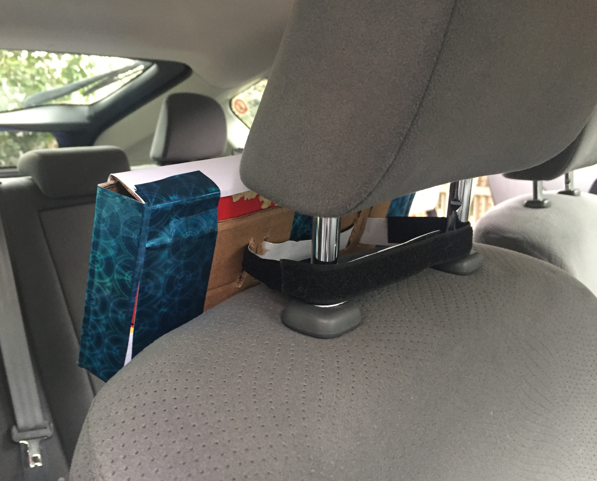

Final Project Idea!
Beat the Heat: Protecting those in the Back Seat

An idea I had was to create a temperature detector for users who
leave their pets or children in enclosed spaces that are subject to overheating,
like a car, covered strollers, or poorly insulated rooms in a house.
What immediately comes to mind is using Arduino's Thermistor and possibly
LEDs to generate some type of feedback as to whether the enclosed space
is too hot to keep an animal or small child in.
Update 2/11/19:
Based off the past few assignments, I could possibly use an LED to serve as a form of feedback to a certain temperature threshold being met or some sort of speaker to allow for audio feedback.
Update 2/15/19:
In addition to the LED or audio feedback, this product could also serve the purpose of being left in a room/area to be able to detect temperature levels that border on too hot or too cold. It could send an alert or message to notify the owner that a certain temperature threshold has been met and to return immediately. (ex: "It's too hot in here!" or "It's too cold in here!")
Update 2/28/19:
Knowing that I will need to use a Thermistor for this project, today I spent some time learning how to set up the circuit and write code in the Arduino sketch. Below I have images of the circuit where the 10k Thermistor (provided by my Arduino kit) is connected to a 100k Ohm resistor. One leg of the resistor is connected to GND, the other to a leg of the Thermistor. A wire is then connected to the analog pin A0 to the same row where the legs of the thermistor and resistor are connected. The other leg of the Thermistor is connected to 5V of power.
So far, this code and set up works, but the code only reports the resistance value of the Thermistor. I will need to figure out a conversion from resistance value and its associated temperature, preferrably in Fahrenheit. Additionally, I'll need to figure out how I will display feedback once a certain temperature threshold is met. This could be as simple as as a Red LED lighting up when the temperature is too high and a Green LED when it is "Ok". A more ambitious approach could be using the LCD screen to display a message containing the reported temperature read by the Thermistor and whether or not the encclosed area is safe.
The Setup
The Code

Update 3/5/19:
Since the last update, I managed to find code that can convert the resistance measured by the Thermistor to degrees Fahrenheit (F). With that key aspect figured out, I started working on the feedback system I am trying to incorporate with this project. I referred to my first assignment where I made LEDs blink and recreated the set up alongside the Thermistor on my breadboard.
A red LED is connected to Pin 2 using a 1k Ohm resistor - more than enough to accommodate for the voltage drop - and a second 1k Ohm resistor is used for a green LED connected to Pin 4. In the code, I defined both pins as OUTPUTs and created a conditional statement that if the temperature measured by the Thermistor is between 50 and 80 degrees F, the green LED would turn on (and the red LED is made sure to be turned off). If the temperature measured is greater than or equal to 84 degrees F, the red LED turns on (and the green LED is made sure to be turned off).
Rationale for Temperature thresholds described in the conditional statement: "When the outside temperature is 70 degrees, a car can heat up to 89 degrees in just 10 minutes, and to 104 in 30 minutes. At 80 degrees outside, you’re looking at 99 degrees inside a vehicle in 10 minutes and 114 in 30 minutes. At 95 degrees, it only takes 10 minutes to reach 114 degrees and the temperature soars to 129 degrees in 30 minutes." [SOURCE]
That being said, if the temperature reaches 89 degrees or higher, it is dangerous to whomever is in the vehicle or enclosed space. So I set the conditional statement to turn on the red light as a way to provide feedback that the temperature being read is too hot to leave a pet or child in that space.
The Setup

Schematic

The Code

Update 3/12/19: Completed Final!
Concept
This past summer, there were numerous occurrences of pets being left unattended in vehicles parked under direct sunlight. In a matter of minutes a car can turn into a hot box in temperatures of 70° Fahrenheit or higher. Specifically, "When the outside temperature is 70 degrees, a car can heat up to 89 degrees in just 10 minutes, and to 104 in 30 minutes. At 80 degrees outside, you’re looking at 99 degrees inside a vehicle in 10 minutes and 114 in 30 minutes. At 95 degrees, it only takes 10 minutes to reach 114 degrees and the temperature soars to 129 degrees in 30 minutes." [SOURCE]This is a major problem and I hoped to address it with my final project idea of building a temperature safety device for people to leave in their cars. It measures the temperature within the vehicle, specifically from the backseat, and uses a green LED to signify that the temperature of the car is safe to leave an animal inside. When temperatures of 84°F or higher is read, the green LED is turned off and the red LED is turned on.
I decided on the placement of the device to be among the backseats of the vehicle, attached to the back of the passenger seat headrest. Originally, I thought about placing it on the dashboard for the driver to have a direct viewpoint. It occurred to me that the direct sunlight from the windshield onto the device would affect the accuracy of the the temperature within the whole vehicle.
Challenges and Future Improvements
The main challenges of this project were figuring out how to convert the
measured resistance of the thermistor into Fahrenheit within the code, as well as
trying to encase the arduino, breadboard, and battery. For the former, I simiply looked up
mathematical code that others have used to convert the thermistor resistance to Fahrenheit, Celcius, or Kelvin.
The overall set up
ended up being 4.5" by 10.5" and because the wires I had were too short to layer
the pieces on top of each other, I set them up linearly. This made for a slightly long
boxed device that conveniently fit behind the headrest of the car.
If I were to continue working on this in the future, I would conduct usability tests
and observations with participants to gauge where they check for temperature in their car.
Regardless of if they do or do not check for this, I could learn how an average person
might go about this behavior and identify a point of reference to design where this device
could be placed in the vehicle. Additionally, I would test out if the temperature on the dashboard
of a car is equivalent to the temperature of the backseats and trunk, so that I can
make an informed decision about having the device located on the dashboard.
Were it not for the time constraints for this project, I would have included an LCD screen
alondside the LEDS to display the exact temperature measured by the thermistor. As well as
including code to communicate the status of the temperature to the owner of the vehicle via SMS
when the temperature inside of their car reached unsafe levels.
Implementation


Demo
In case the in browser video does not work, you can also view my demo here!
Schematic
Code
Presentation